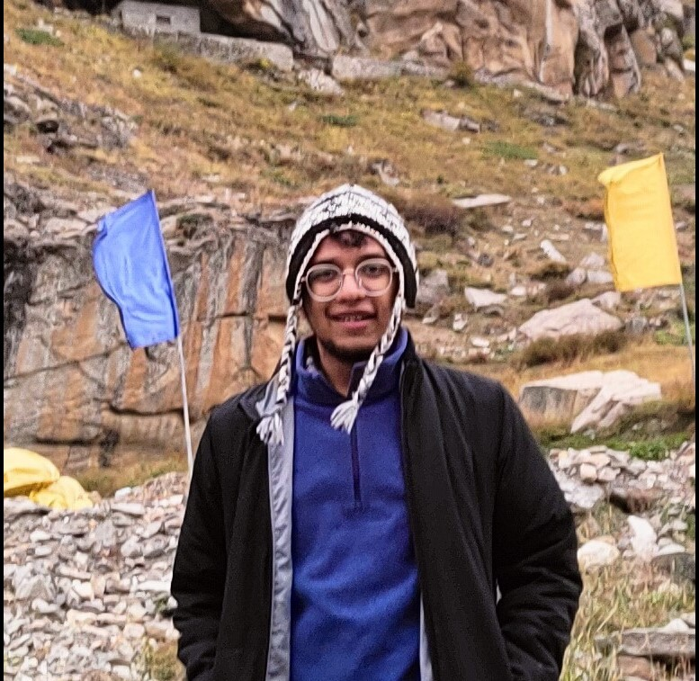

Deepansh Bhargava
Experienced conducting research in the field of technology and learning everyday for over 2 years to be better at UX Research and Design
Experience
Associate UX Researcher - ColreTech
September 2023 - Present
-
Offering UX Research skills, Market Research, research and design operations, to support and assist the top most B2B and B2C clients at Colretech.
-
Conducting Foundational research, Usability testing, Remote contextual inquiry, diary study, one-on-one interviews and participant observations.
UX Researher - ROSA Tech
April 2023 - September 2023
-
Doing in depth research into the preferences of our target audience comprising of industry professionals and government officials, did content management and curation for ROSA Tech's social media.
-
Conducted research on the home page, blog and the information section of the website by using multiple research methods.
UX Research Projects
June 2023 - August 2023
-
Gained valuable experience making 2 UX research projects under the expert mentorship of a renowned industry professional.
-
Conducted usability testing and one on one user interviews for Netflix's Games feature within the mobile app, resulting in data driven recommendations that improved user satisfaction and feature adoption.
-
Led the development of a comprehensive UX research project addressing challenges faced by Volunteers in India with a focus on bridging communication gaps and identifying pain points, using preference tests, one-on-one interviews and participants observations.
Creative Associate - BYJUs - The Learning App
June 2021 - Febuary 2023
-
Developed visually compelling animatics and motion graphics for 3 international educational products on various subjects.
-
Proficient in strategic research to identify engaging content for the American Teenage Demographic (11 - 13 years old).
-
Proficient in Adobe Creative Suite, ensures timely project delivery and cross functional team collaboration in asset creation, streamlining production worklows and fostering a collaborative work environment.
Education
Birla Institute of Technology - Bachelors of Engineering, Chemical, Plastic and Polymer
August 2017 - May 2021
Skills
Qualitative Research
- Contextual Enquiry
- Interviews
- Focus Group Discussions
- Ethnography
- Card Sort
- Usability Test
- Heuristics
- Experience Review
- Affinity Mapping
- Task Analysis
- A/B Testing
- Wireframes
- Personas
Quantitative Research
- Survey
- Usability Test
- Applied Statistics
Tools
- Figma
- Figjam
- Adobe Illustrator
- Adobe Premiere Pro
- Adobe After Effects
- Adobe Photoshop
- Advanced MS Excel
- Maze
- Lookback.io
- UserTesting
- Airtable
- Dovetail
- Confluence
- Jira
- Azure DevOps
- Miro
- Google Analytics
- Hotjar
Technical Proficiency
Languages
- Hindi
- English
- Japanese
- French